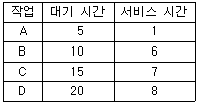
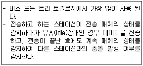

사무자동화산업기사 (2015-03-08 기출문제)
1과목: 사무자동화 시스템
1. 다음 중 정보화 사회의 특징으로 가장 거리가 먼 것은?
- 협동화
- 분산화
- 시스템화
- 규격화
(정답률: 55%)

2. 뉴미디어의 분류체계 중 정보전달 매체를 기준으로 분류할 때 해당되지 않는 것은?
- 무선계
- 유선계
- 영상계
- 패키지계
(정답률: 67%)
3. 주소를 사용하는 것이 아니라 기억된 정보의 일부분을 이용하여 원하는 정보에 접근하는 기억장치는?
- 가상 메모리
- 캐시 메모리
- 연관 메모리
- 버퍼링
(정답률: 58%)
4. 전자우편시스템에서 전자메일을 송신하는데 사용되는 프로토콜은?
- HTTP
- POP3
- SMTP
- TELNET
(정답률: 65%)
5. 중앙처리장치의 구성요소 중 제어 장치에 속하지 않는 것은?
- 메모리 버퍼 레지스터
- 데이터 레지스터
- 프로그램 카운터
- 명령 레지스터
(정답률: 53%)
6. 스마트 워크의 장점이 아닌 것은?
- 언제 어디서나 효율적으로 일할 수 있다.
- 원격업무, 재택근무 등이 포함된다.
- 업무생산성 향상과 강력한 보안체계를 구성할 수 있다.
- 모바일 기기를 이용하여 빠른 결재 업무 처리가 가능하다.
(정답률: 77%)
7. 다음 중 전자상거래의 장점으로 옳지 않은 것은?
- 상품구매와 관련한 의사결정의 과정에서 효율적인 구매 결정이 가능
- 전 세계를 대상으로 한 판매 전략 수립 가능
- 판매자 입장에서 저렴한 비용으로 광고가 가능
- 전자거래 이후 거래 자체를 부인 가능
(정답률: 90%)
8. 분산 처리 시스템에 관한 설명 중 옳지 않은 것은?
- 분산처리 시스템은 시스템의 응답성과 신뢰성이 높다.
- 하드웨어, 소프트웨어, 데이터 등이 서로 호환성이 없을 경우에도 시스템 구축이 용이하다.
- 대규모 처리에 대한 적응력이 높으며, 확장성이 좋다.
- 수평·계층 혼합형 분산처리 시스템의 발전된 형태로서 클라이언트/서버 시스템이 있다.
(정답률: 68%)
9. 인터넷상에서 사이트에 접속하여 정보를 나열해 주는 프로그램은?
- 워드프로세서
- 웹에디터
- 알파넷
- 웹브라우저
(정답률: 86%)
10. 관계형 데이터베이스에서 기본 키(Primary Key)가 가져야 할 성질은?
- 공유성
- 중복성
- 식별성
- 연결성
(정답률: 79%)
11. 기억을 위한 핵심 소자가 반도체 기반으로 설계된 보조기억장치가 아닌 것은?
- Secure Digital Card
- Hard Disk Drive
- Compact Flash Drive
- Solid State Drive
(정답률: 66%)
12. 사무자동화로 기대되는 정성적 효과가 아닌 것은?
- 개인의 업무처리능력이 향상된다.
- 의사결정을 신속히 할 수 있다.
- 정보획득시간이 길어진다.
- 업무처리시간을 단축할 수 있다.
(정답률: 75%)
13. 멀리 떨어져 있는 회의실을 통신회선으로 상호 연결하여 회의를 진행할 수 있는 시스템은?
- 원격회의시스템
- 분산처리시스템
- 원격조정시스템
- 텔레텍스트
(정답률: 91%)
14. 사무자동화의 특징이 아닌 것은?
- 사무의 생산성 향상
- 인간과 기계간의 인터페이스
- 인건비, 관리비 증가
- 사무처리 시간의 단축
(정답률: 90%)
15. 사무자동화의 생산성에 대한 설명으로 틀린 것은?
- 오피스 생산성은 유형적, 무형적인 효과를 여러 측정법으로 완벽하게 계량화할 수 있다.
- 오피스의 생산성은 간접적으로는 구할 수 있지만 직접적으로는 평가할 수 없다.
- 오피스에서는 생산성의 효율성과 유용성 양면에 대한 기준을 명확하게 규정할 방법이 없다.
- 오피스 근로자의 지적능력, 경험에 의하는 바가 많기 때문에 산출성과를 높은 수준으로 안정되게 유지 할 수 없다.
(정답률: 54%)
16. DBMS의 주요기능이 아닌 것은?
- 정의기능(Definition Facility)
- 응용기능(Application Facility)
- 제어기능(Control Facility)
- 조작기능(Manipulation Facility)
(정답률: 68%)
17. 다음 중 DBMS 모델의 종류가 아닌 것은?
- 관계 데이터베이스
- 링크 데이터베이스
- 계층적 데이터베이스
- 객체지향 데이터베이스
(정답률: 63%)
18. 사무자동화가 조직 구조를 종래의 피라미드형 조직에서 네트워크형 조직으로 변환시키는 이유로 틀린 것은?
- 관리직의 관리범위의 증대
- 관리자의 지휘·통솔에 대한 역할이 불필요
- 시장변화에 대한 신속하고도 정확한 대응
- 의사소통의 신속화
(정답률: 81%)
19. 사무자동화 추진에서 최적시스템을 구성하고 추진효과를 극대화 할 수 있는 방법은?
- 상향식 접근방식
- 전사적 접근방식
- 하향식 접근방식
- 공통과제형 접근방식
(정답률: 64%)
20. 다음 중 캐시 메모리(Cache Memory)의 설명으로 옳은 것은?
- 컴퓨터의 처리속도를 빠르게 하기 위한 임시 메모리이다.
- 많은 데이터를 보조기억장치에서 한 번에 가져온다.
- 보조기억장치의 용량에 해당하는 기억장소를 가진 것처럼 큰 프로그램을 작성할 수 있도록 한다.
- 데이터 영구저장을 위해서 사용되는 보조기억장치이다.
(정답률: 81%)
2과목: 사무경영관리 개론
21. 문서정리의 기본적인 절차를 순서대로 나열한 것은?
- 보관→분류→보존→폐기
- 분류→보존→보관→폐기
- 보관→보존→분류→폐기
- 분류→보관→보존→폐기
(정답률: 78%)
22. 전자 상거래에 대한 설명으로 틀린 것은?
- 마케팅, 광고, 구매, 대금 결제 등 기업이나 소비자간 제반 상거래 절차의 전자적인 구현이다.
- 인터넷을 이용한 유통의 편리함과 저비용을 목표로 개발된 상거래의 새로운 조류이다.
- 기업 간, 기업과 정부 간에 주로 활용 되었던 EC가 인터넷의 확산에 따라 EDI로 발전 되었다.
- CALS는 기업 활동 전반에 걸친 복수 기업 간의 정보 교환, 공유를 위한 전자 상거래의 하나이다.
(정답률: 64%)
23. 앤소프(H.I. Ansoff)가 분류한 의사결정의 유형이 아닌 것은?
- 상황적 의사결정
- 전략적 의사결정
- 업무적 의사결정
- 관리적 의사결정
(정답률: 54%)
24. 전자데이터교환(EDI)의 구성요소로 알맞지 않은 것은?
- EDI 검사
- EDI 네트워크
- EDI 하드웨어
- EDI 소프트웨어
(정답률: 69%)
25. EDI(Electronic Date Interchange)에 대한 설명으로 틀린 것은?
- EDI는 기업 간 또는 공공기관 간의 표준화된 행정서식을 통신망을 통해 직접 전송신호를 주고받는 것을 말한다.
- EDI는 컴퓨터가 자동으로 판독할 수 있는 일정한 구조를 가진 메시지 형태의 서류를 교환한다.
- EDI는 컴퓨터 시스템들 간의 신속, 정확한 정보교환 요구에서 생긴 것이다.
- EDI는 Computer to Computer 통신방식에 의한 정보의 재입력과 문서처리의 오류를 배제하지 못한다.
(정답률: 74%)
26. 기업경영에 있어서 EDI를 통해 얻을 수 있는 전략적 효과가 아닌 것은?
- 다른 경영관리 시스템과의 통합
- 거래 상대방과의 관계 증진
- 경쟁력의 강화
- 인력의 효율적인 관리로 인건비 절약
(정답률: 58%)
27. 자료의 수집 방법에 해당하지 않는 것은?
- 납본
- 구입
- 교환
- 변경
(정답률: 64%)
28. 경매 또는 역경매를 통해서 판매자보다 소비자가 시장에서 교섭력을 가지는 전자상거래는?
- B2B
- C2C
- B2C
- B2G
(정답률: 74%)
29. 사무의 의의와 종류에 대한 설명으로 틀린 것은?
- 사무는 조직의 목적을 수행하는 수단이다.
- 행정목적을 직접 수행하는 것은 본래사무이다.
- 본래사무는 참모부분이 담당하는 참모사무이다.
- 사무는 본래사무와 지원사무로 구분하기도 한다.
(정답률: 74%)
30. 경영과 사무의 관계를 잘못 서술한 것은?
- 판매전표를 작성하는 경우 이는 사무이며, 동시에 경영의 판매활동을 처리하는 것이다.
- 경영의 목적은 사무에 있고, 사무활동은 작업적 측면과 기능적 측면으로 분류할 수 있다.
- 사무의 간소화, 표준화, 기계화는 동시에 경영활동의 간소화, 표준화, 기계화를 성취하는 것이다.
- 사무기능도 경영기능과 같이 생산사무, 재무사무, 인사사무, 판매사무 등으로 나눌 수 있다.
(정답률: 67%)
31. 저작물 등의 원본 또는 그 복제물을 공중에게 대가를 받거나 받지 아니하고 양도 또는 대여하는 것을 의미하는 것은?
- 발행
- 배포
- 공표
- 양도
(정답률: 77%)
32. 부서장이 사무 간소화의 훈련을 받고나서 부하를 훈련시켜 말단의 작업원에 이르기까지 진행한 다음 실제로 사무 간소화하는 것은 밑에서 위로 향한 자발적으로 맡기는 사무 간소화 모형은?
- 자발적 접근법
- 비공식 및 공식 프로그램
- 문제해결식 접근법
- 순수계선 개발식 접근형
(정답률: 47%)
33. EDI의 특징 및 효과가 아닌 것은?
- 종이 없는 기업거래(Paperless Trade)를 실현한다.
- 거래처간에 상호 합의된 메시지를 컴퓨터를 통해 상호교환 한다.
- 수신측 컴퓨터에 도달한 데이터는 변환 및 재입력이 필요하다.
- 재고관리에 JIT(Just-In-Time) 전략을 도입하여 관리비를 절약할 수 있다.
(정답률: 72%)
34. 사무표준화를 통하여 얻을 수 있는 기대효과가 아닌 것은?
- 관리자의 관리활동을 편리하게 해준다.
- 관리자가 직원들에게 대산 감독 시 통제를 더욱 철저하게 할 수 있다.
- 부서별로 평가기준의 통일을 기할 수 있다.
- 사무원의 생산성 향상에 도움이 된다.
(정답률: 33%)
35. 문서 자료를 조직적으로 정리하여 일관성 있게 보존하는 제도는?
- 파일링시스템
- 문서자료 합리화시스템
- 표준화시스템
- 펀치카드시스템
(정답률: 64%)
36. 사무조직의 집권화에 대한 장점이 아닌 것은?
- 시간의 경제성을 높이고 작업량의 균일화가 가능하다.
- 의사결정에 있어서 보다 상세한 정보투입을 가능하게 한다.
- 기계 설비의 유휴시간이 감소되어 소요 면적이 감소된다.
- 휴가 또는 질병에 의한 결근에 대해 적절한 조취를 취할 수 있다.
(정답률: 36%)
37. 중요한 사무환경 요소로 볼 수 없는 것은?
- 조명
- 색채조절
- 고층사무실
- 공기조절
(정답률: 84%)
38. 사무표준의 구비조건으로 틀린 것은?
- 사무표준은 정확해야 한다.
- 사무작업내용과 근무조건을 분석하기 전에 만들어야 한다.
- 주기적으로 재검토하여 수정하여야 한다.
- 실제작용에 무리가 없고 당사자인 사무원들이 받아들일 수 있어야한다.
(정답률: 66%)
39. 사무의 물리적 집중화의 장점이 아닌 것은?
- 사무집행처리에 대한 감독의 철저
- 각 부서의 비밀유지가 가능
- 제한된 인력의 효과적인 활용
- 전문적, 기술적 작업의 가속화
(정답률: 58%)
40. “현실적으로 달성 가능한 표준”을 설명한 것이 아닌 것은?
- 최상의 작업환경 속에서 달성 가능한 표준
- 보통의 작업자들이 열심히 노력하기만 하면 달성 가능한 표준
- 작업이나 작업환경을 과학적으로 분석하여 엄격하지만 달성 가능한 표준
- 근로자에게 동기를 부여할 수 있고 객관적으로 성과를 평가할 수 있는 표준
(정답률: 55%)
3과목: 프로그래밍 일반
41. 프로그래밍 언어의 해독 순서로 옳은 것은?
- 컴파일러 로더 링커
- 로더 링커 컴파일러
- 링커 컴파일러 로더
- 컴파일러 링커 로더
(정답률: 82%)
42. 중위 표기의 수식 “A * ( B - C )"를 전위 표기로 나타낸 것은?
- * A - B C
- A B C - *
- A * B C -
- A B - C *
(정답률: 65%)
43. C 언어에서 문자형 자료를 나타내는 데이터 형은?
- integer
- int
- char
- character
(정답률: 72%)
44. 프로그램을 작성하는 과정에서 컴퓨터에 의하여 직접 실행되는 명령어들이 아니라, 프로그램을 읽어 이해하기에 도움이 되는 내용들을 기록한 부분으로 프로그램의 판독성을 향상시키는 요소를 무엇이라고 하는가?
- 예약어 (Reserved Word)
- 주석 (Comment)
- 연산식 (Expression)
- 식별자 (Identifier)
(정답률: 73%)
45. 프로그램 개발 과정에서 프로그램 안에 내재해 있는 논리적 오류를 발견하고 수정하는 작업은?
- Loading
- Debugging
- Linking
- Hashing
(정답률: 87%)
46. 원시 프로그램을 컴파일러가 수행되고 있는 컴퓨터의 기계어로 번역하는 것이 아니라, 다른 기종에 맞는 기계어로 번역하는 것은?
- Debugger
- Preprocessor
- Cross Compiler
- Linker
(정답률: 79%)
47. C 언어에서 사용하는 기억 클래스에 해당하지 않는 것은?
- 자동 변수
- 동적 변수
- 레지스터 변수
- 정적 변수
(정답률: 55%)
48. 기억장치의 한 장소를 추상화한 것으로 프로그램이 동작하는 동안 값이 수시로 변할 수 있는 것은?
- 상수
- 포인터
- 주석
- 변수
(정답률: 83%)
49. 최근의 사용 여부를 확인하기 위해서 페이지마다 2개의 비트, 즉, 참조 비트와 변형 비트가 사용되는 페이지 교체 알고리즘은?
- LRU
- NUR
- FIFO
- OPT
(정답률: 52%)
50. 고급 언어에 대한 설명으로 옳지 않은 것은?
- 사람 중심의 언어이다.
- 상이한 기계에서 별다른 수정 없이 실행 가능하다.
- 번역 과정 없이 실행 가능하다.
- C, COBOL 등의 언어는 고급 언어에 해당된다.
(정답률: 60%)
51. 실행 중인 프로세스가 일정 시간 동안에 참조하는 페이지의 집합을 의미하는 것은?
- WORKING SET
- MONITOR
- SEGMENT
- LOCALITY
(정답률: 79%)
52. C 언어에서 문자열을 출력하기 위해 사용 되는 것은?
- %x
- %d
- %s
- %h
(정답률: 60%)
53. C 언어의 특징으로 옳지 않은 것은?
- 이식성이 뛰어나 컴퓨터 기종에 관계없이 프로그램을 작성할 수 있다.
- UNIX 운영체제를 구성하는 시스템 프로그램이다.
- 기호 코드 (Mnemonic Code)라고도 한다.
- 포인터에 의한 번지 연산 등 다양한 연산 기능을 가진다.
(정답률: 67%)
54. HRN(Highest Response-ratio Next) 방식을 스케줄링 할 경우, 입력된 작업이 다음과 같을 때 가장 먼저 처리되는 작업은?

- A
- B
- C
- D
(정답률: 55%)
55. 운영체제의 성능과 평가 요소로 거리가 먼 것은?
- 반환 시간
- 신뢰도
- 비용
- 처리 능력
(정답률: 74%)
56. 어휘 분석은 원시 프로그램을 하나의 긴 스트링으로 보고 원시프로그램을 문자 단위로 스캐닝 하여 문법적으로 의미 있는 일련의 문자들로 분할해 낸다. 이때 분할된 문법적인 단위는?
- PATTERN
- TREE
- TOKEN
- PARSE
(정답률: 82%)
57. 구문 분석기가 올바른 문장에 대해 그 문장의 구조를 트리로 표현한 것으로 루트, 중간, 단말 노드로 구성되는 트리는 무엇인가?
- 파스 트리
- 라운드 트리
- 시프트 트리
- 토큰 트리
(정답률: 83%)
58. 순서 제어 구조에서 묵시적인 방법에 해당하는 것은?
- 반복문을 사용하는 방법
- GOTO문을 사용하는 방법
- 연산자의 우선순위에 따른 수식 계산
- 연산자의 순서를 프로그래머가 변경하는 방법
(정답률: 65%)
59. 기계어에 대한 설명으로 옳지 않은 것은?
- 2진수 0과 1만 사용하여 명령어와 데이터를 나타낸다.
- 컴퓨터가 직접 이해할 수 있어 실행 속도가 빠르다.
- 전문적인 지식이 없으면 이해하기 힘들다.
- 모든 기계에서 공통으로 사용 가능하여 호환성이 높다.
(정답률: 80%)
60. C 언어에서 사용하는 이스케이프 시퀀스에 대한 의미가 옳지 않은 것은?
- \n : new page
- \r : carriage return
- \b : backspace
- \t : tab
(정답률: 69%)
4과목: 정보통신 개론
61. 정보통신시스템의 특징으로 틀린 것은?
- 거리와 시간의 극복
- 대형 컴퓨터의 공동 사용
- 광대역 전송에만 사용
- 대용량 파일의 공동 이용
(정답률: 76%)
62. 문자 위지 동기전송의 제어문자 중 전송해야 할 프레임의 끝을 알리는 것은?
- ETX
- ETB
- EOT
- ENQ
(정답률: 38%)
63. 다음이 설명하고 있는 LAN의 매체 접근 제어방식은?

- CSMA/CD
- token bus
- token ring
- slotted ring
(정답률: 68%)
64. VAN의 계층구조 중 통신처리 계층의 기능에 해당하는 것은?
- 패킷교환방식을 사용하여 교환기능을 수행한다.
- 필요한 자료를 정보전송 매체를 통하여 즉시 제공한다.
- 순수한 정보의 전송만을 수행한다.
- 축적기능 및 변환기능을 수행한다.
(정답률: 32%)
65. 데이터 전송오류 검출방식으로 틀린 것은?
- 패리티(parity)검사
- 블록합검사(block sum check)
- 순환잉여검사(CRC)
- 바이폴라(bipolar)검사
(정답률: 71%)
66. 반송파로 사용하는 정현파의 위상에 정보를 실어 보내는 변조방식은?
- ASK
- DM
- PSK
- ADPCM
(정답률: 60%)
67. 주파수분할 다중화(FDM)방식에서 보호대역(guard band)의 역할로 올바른 것은?
- 주파수 대역폭 확장
- 신호의 세기를 증폭
- 채널간의 간섭을 제한
- 많은 채널을 좁은 주파수 대역에 포함
(정답률: 71%)
68. 인터넷 프로토콜 TCP/IP에서 TCP는 OSI 7 계층 중 어느 계층에 해당하는가?
- 응용 계층
- 전송 계층
- 네트워크 계층
- 데이터링크 계층
(정답률: 45%)
69. 광섬유 케이블에서 클래드(Clad)의 주 역할은?
- 광 신호를 반사시키는 역할
- 광 신호를 증폭시키는 역할
- 광 신호를 저장시키는 역할
- 광 신호를 입력시키는 역할
(정답률: 59%)
70. 다음 중 데이터 전송 제어 절차가 올바른 것은?
- 통신회선연결 → 링크설정 → 통신회선해제 → 데이터전송 → 링크해제
- 통신회선연결 → 링크설정 → 데이터전송 → 링크해제 → 통신회선해제
- 링크설정 → 통신회선연결 → 데이터전송 → 링크해제 → 통신회선해제
- 링크설정 → 통신회선연결 → 링크해제 → 데이터전송 → 통신회선해제
(정답률: 64%)
71. 다음 국제표준 통신 프로토콜 중 IP주소를 물리주소로 변환하기 위해 사용되는 것은?
- ARP
- TCP
- ICMP
- DHCP
(정답률: 49%)
72. OSI-7 계층 중 프로세스 간의 대화제어 및 동기점을 이용한 효율적인 데이터 복구제공을 위한 계층은?
- 표현 계층
- 데이터링크 계층
- 세션 계층
- 전송 계층
(정답률: 52%)
73. 인터넷 통신을 위한 기본 통신 프로토콜은?
- PPP
- HDLC
- X.23
- TCP/IP
(정답률: 80%)
74. RS-232C 표준 인터페이스는 몇 개의 핀(PIN)으로 구성되는가?
- 10
- 22
- 25
- 32
(정답률: 67%)
75. 다음 중 ITU-T 권고안에서 X 시리즈의 내용은?
- PSTN을 이용한 데이터전송에 관한 사항
- 축적프로그램 제어식 교환의 프로그램에 관한 사항
- 공중데이터통신망을 이용한 데이터전송에 관한 사항
- 전신 데이터의 전송 및 교환에 관한 사항
(정답률: 52%)
76. 멀티미디어의 표준화에 해당되지 않는 것은?
- JPEG
- MPEG
- MHS
- MHEG
(정답률: 70%)
77. 아날로그 신호를 디지털 신호로 변환하는 PCM 부호화 단계로 맞는 것은?
- 양자화 → 부호화 → 표본화
- 표본화 → 양자화 → 부호화
- 양자화 → 표본화 → 부호화
- 표본화 → 부호화 → 양자화
(정답률: 80%)
78. 병렬 전송 방식에 대한 설명으로 거리가 먼 것은?
- 병렬 전송은 한 문자를 구성하는 각 비트를 각각의 데이터 선을 통해 한꺼번에 전달하는 방식이다.
- 직렬전송보다 전송 속도가 빠르고, 원거리 데이터 전송에서보다 경제적이다.
- 스트로브(strobe) 신호는 송신측 다음 문자의 전송을 수신측에 알리게 된다.
- 비지(busy) 신호는 수신측이 데이터 수신 가능 상태를 송신측에 전달한다.
(정답률: 62%)
79. HDLC 프레임을 구성하는 필드가 아닌 것은?
- FCS 필드
- Flag 필드
- Control 필드
- Link 필드
(정답률: 56%)
80. 패킷교환방식에 대한 설명으로 틀린 것은?
- 교환기에서 패킷을 일시 저장 후 전송하는 축적교환 기술이다.
- 패킷처리 방식에 따라 데이터그램과 가상회선 방식이 있다.
- X.25는 패킷형단말기와 패킷망간의 접속 프로토콜이다.
- X.75는 비패킷형단말과 PAD간의 접속 프로토콜이다.
(정답률: 61%)
설명: 정보화 사회에서는 다양한 기술과 시스템이 개발되어 사용되고 있으며, 이를 효율적으로 활용하기 위해 규격화가 필요합니다. 규격화란, 서로 다른 시스템이나 기술이 상호 운용 가능하도록 표준화된 규칙을 정하는 것을 말합니다. 이를 통해 정보의 통일성과 효율성을 높일 수 있으며, 다양한 분야에서의 협업과 연결성을 강화할 수 있습니다. 따라서, 다른 보기들은 정보화 사회에서 중요한 특징이지만, 규격화는 그 중에서도 더욱 중요한 특징입니다.